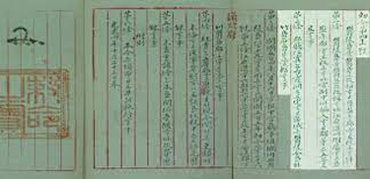
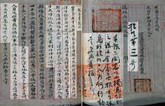

대한제국은 1900년 「칙령 제41호」에서 독도를 울도군(울릉도) 관할구역으로 명시하

「태정관지령」

「기죽도약도」
1900년 10월 27일 대한제국은 황제의 재가를 받아 울릉도를 울도로 개칭하고 도감을
이에 비추어 울도(울릉도) 군수가 1900년 반포된 「칙령 제41호」의 규정에 근거하여
1905년 시마네현 고시에 의한 일본의 독도 편입 시도는 한국 주권 침탈과정의 일환이
독도는 이러한 일본의 한국 주권 침탈과정의 첫 번째 희생물이었습니다.
제2차 세계대전 종전 이후 독도는 우리 영토로 돌아왔고, 우리 정부는 확고한 영토주권
우리 정부는 독도에 대한 확고한 영토주권을 행사하고 있습니다. 우리 정부는 우리의